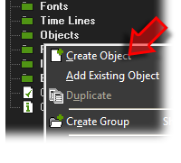
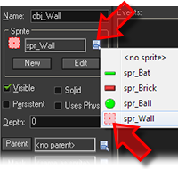
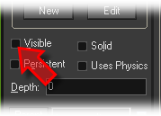

Tutorial
Page 3 of 13
Creating A Wall Object
Now that we have the basic sprites for our game, lets make some objects. An object is the base template that all instances are made from, and an instance is what actually
goes into a GameMaker room to make your game playable. This means that you can have one object, yet multiple instances and that each instance will have the same
properties as the base object, but (since they are independant) they can be changed and manipulated independantly. To illustrate this we are going to start with the Wall
object.
As you did for creating a sprite, right click on the object folder of the resource tree and click on the Create Object option.

Now, give your object a new name (something like "obj_Wall") and then click on the assign sprite icon that appears beneath the name and select the wall sprite.

The wall instances will be used to create the outside edges of the playing area, and they will be used to stop the player bat from going outside of the room while moving and to also bounce the ball off of
so that it too is maintained always in the room (unless it goes below the player!). However, we are going to make the wall invisible so that it can't be seen by the player as later on we will add some
tiles to the room to make it look nicer.
To make instances of the wall object invisible, we need to un-flag the visible setting of the object:

An invisible instance will still detect collisions and run code just like any other instance with the one exception of the Draw Event. This event will not be run meaning that any code or DnD
actions within that event will not work when it is not visible.
Save your game now before continuing.
Click on the Next button to go to the next page of the tutorial.